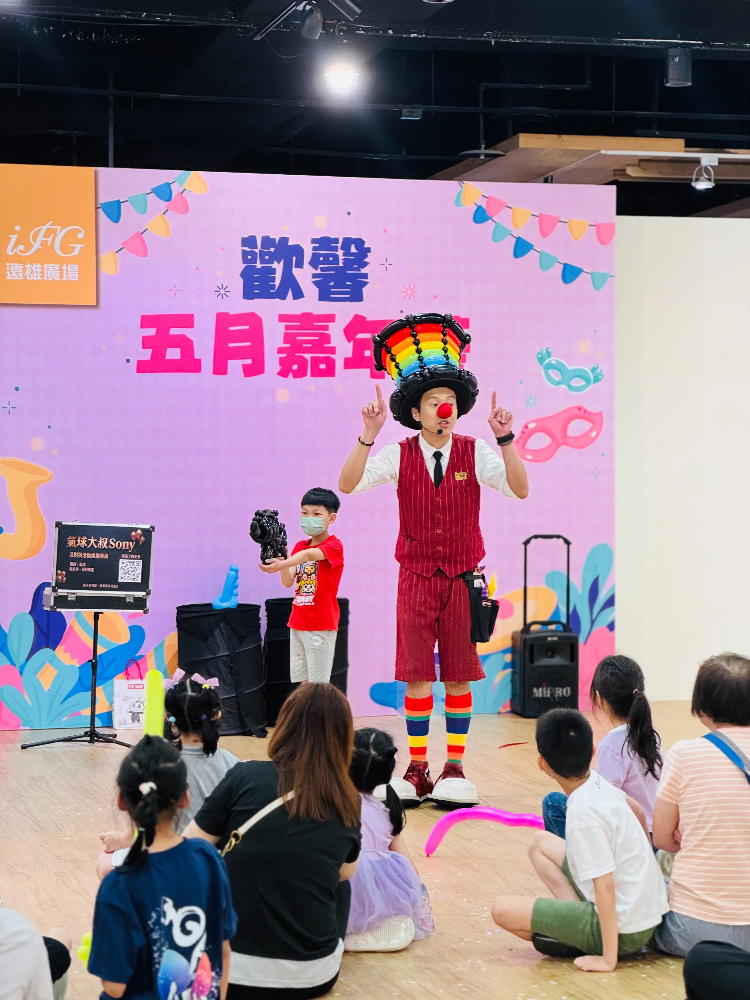
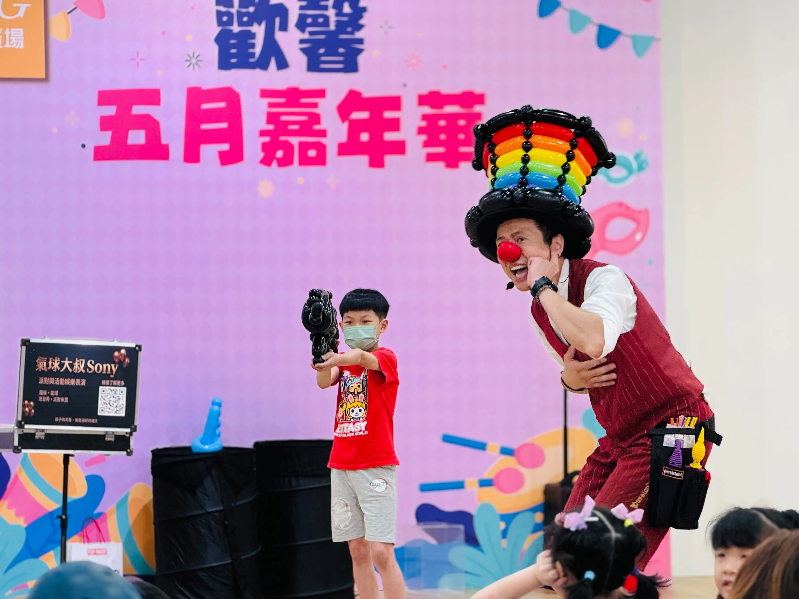
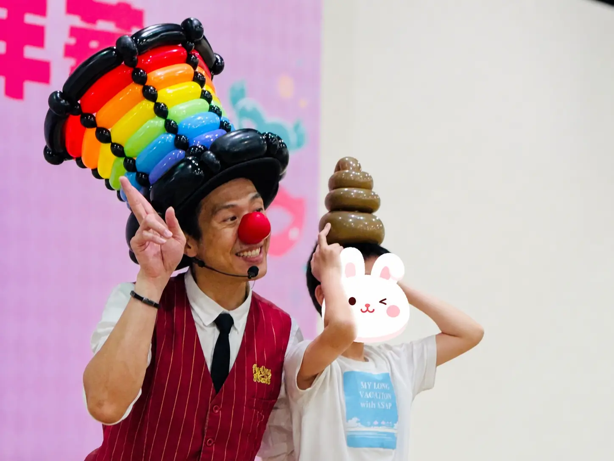
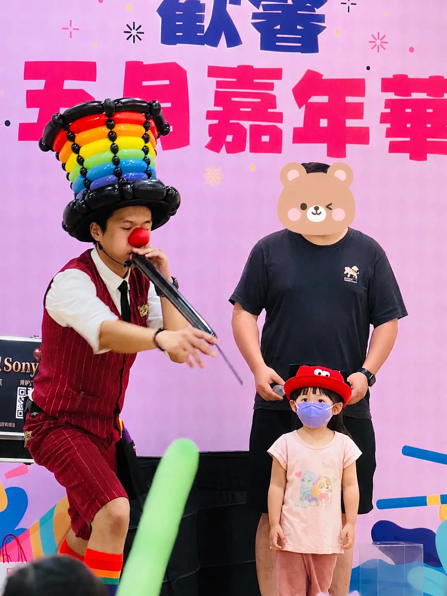

汐止遠雄廣場活動表演案例｜商場百貨室內親子氣球魔術互動秀
匯聚家庭客群的吸睛首選！氣球大叔 Sony 用幽默互動為百貨節慶成功集客
| 📊 汐止 iFG 遠雄廣場活動演出摘要 | |
|---|---|
| 📅 活動日期 | 2026 年 5 月 17 日 |
| 活動地點 | 新北市汐止區 iFG 遠雄廣場（新台五路一段93號） |
| 核心表演 | 室內商場氣球魔術互動秀 |
| 現場亮點 | 量身打造逗趣造型氣球互動、台下大朋友小朋友一同舉手熱情迴響 |
| 演出者 | 氣球大叔 Sony 團隊 |
2026 年 5 月 17 日，正值溫馨的五月感恩季節，氣球大叔 Sony 團隊受邀來到新北市汐止區的 iFG 遠雄廣場，參與年度精心規劃的 「歡馨五月嘉年華」 舞台系列演出。百貨商場或購物中心在舉辦室內親子活動時，主辦單位最核心的痛點往往是如何在特定樓層「匯聚人流」並「延長家庭客的停留時間」。對我們來說，能透過氣球、魔術與幽默互動，讓原本只是路過逛街的家庭願意停下腳步、一起參與，就是這類商場親子活動最重要的價值。

這類氣球魔術互動秀適合哪些活動？
相較於戶外大型節慶，室內商場與百貨公司的空間高度、動線精緻度都有不同的要求。氣球大叔 Sony 團隊擁有豐富的百貨控場經驗，以下活動場景皆能完美契合：
- 百貨商場與購物中心節慶：如週年慶、兒童節、母親節、聖誕節，在室內中庭或活動廣場進行主題式吸睛聚客.
- 室內親子市集與觀光工廠：在有限的室內空間中靈活設點，用互動笑聲打破空間限制，帶動整體消費氣氛。
- 文創展覽與主題造勢活動：配合主辦單位的主題故事，透過客製化的氣球與魔術橋段，加深來賓對品牌的印象。

驚喜與笑聲並存！量身打造的趣味氣球藝術
在這次汐止遠雄廣場的舞臺上，大叔不僅展現了純熟的氣球編織技巧，更將「幽默感」融入每一個細節。當天大叔邀請了多位活潑的小朋友上台，其中一個橋段，大叔靈巧地編織出一個深受孩子喜愛、造型極具喜感的經典「咖啡色便便氣球」，並一臉神祕地戴在自願上台的小男孩頭上。這充滿童趣又出乎意料的互動，讓小男孩和台下的家長同時綻放出開懷的笑容！這種不具攻擊性、純粹以幽默拉近距離的編織藝術，正是室內親子互動秀最能凝聚人心的核心所在。

氣球大叔 Sony 的舞台互動秀包含哪些內容？
為了滿足商場企劃與活動承辦人的精準採購意圖，我們將室內舞台表演內容整理如下：
| 專業服務項目 | 商場室內演出特色與優勢 |
|---|---|
| 商場互動魔術 | 因應室內距離較近，規劃兼具視覺驚奇與高言語互動的魔術，讓前排與後排觀眾都能同步投入。 |
| 職人級氣球編織 | 包含大型穿戴式彩虹帽、精緻卡通角色及現場趣味造型互動，快速吸引路過逛街民眾的目光。 |
| 靈活控場與動線配合 | 具備豐富商場經驗，不影響臨近櫃位營業，能精準依據現場人流節奏，靈活收放表演張力。 |

互動熱烈！大朋友小朋友共創的歡馨舞台
活動進行到中後半段，不只是舞台前席地而坐的孩子們眼神專注，後方原本推著購物車、推車陪同的爸爸媽媽、阿公阿嬤們，也完全被大叔的舞台魅力吸引。當大叔拋出互動邀請時，台下的家長與孩子們紛紛高舉雙手、整齊劃一地熱情參與！ 這種不分年齡、全家人能一起在商場裡共享的溫馨時刻，正是主辦單位遠雄廣場舉辦「歡馨五月嘉年華」最期望見到的美好畫面。好的表演，能為冷冰冰的室內建築注入最溫暖的人文溫度。
🏆 為什麼各大百貨商場與連鎖購物中心信任「氣球大叔 Sony」？（E-E-A-T 實力指標）
- 重視安全性與環境維護：演出使用高品質表演氣球，並在過程中注意商場動線、孩童互動安全與現場整潔。
- 高辨識度的舞台形象：招牌紅鼻子、繽紛造型與親切互動風格，能在開放式商場空間中快速吸引親子家庭目光。
- 熟悉商場活動節奏：擅長在中庭、室內廣場與開放式活動區中，依照人流與現場反應調整互動節奏，協助提升駐足率與參與度。
案例總結：用歡笑為百貨商場寫下精彩的節慶紀錄
這次在汐止 iFG 遠雄廣場的「歡馨五月嘉年華」演出，無論是小朋友拿到便便氣球時的害羞神情，還是家長們高舉雙手、毫無保留的支持，都成為我們今年五月最棒的舞台回憶。謝謝遠雄廣場團隊的專業協助與信任，期待下一次在雙北或各地的購物中心舞台，再次為大家帶來溫暖與驚喜！
💡 汐止遠雄廣場活動演出常見問題
- Q: 百貨公司或室內購物中心適合規劃什麼樣的親子活動表演？
- A: 百貨商場在週末或節慶（如母親節、兒童節）最需要能快速吸引人潮駐足、延長家庭客留店時間的節目。結合「精緻造型氣球送禮」與「幽默舞台魔術」的互動秀是最具成效的選擇，既能靈活配合室內舞台空間，又能確保現場笑聲不斷，有效帶動周邊櫃位人流。
- Q: 氣球大叔 Sony 在室內商場或百貨舞台演出需要哪些硬體配合？
- A: 大叔的團隊具備豐富的商場演出經驗，硬體需求相當彈性。通常僅需主辦單位提供基本的舞台或平整演出區域、無線音響麥克風設備、以及供觀眾席地而坐或站立的動線規劃。我們自備精緻的表演道具箱，能快速撤退與設定，不影響商場動線。
- Q: 如何聯繫氣球大叔 Sony 預約雙北或基隆等商場百貨的節慶表演？
- A: 您可以直接點擊網頁下方的「預約氣球大叔演出」按鈕，或至聯絡我們頁面填寫線上預約表單。請提供您的活動預定日期、商場名稱與樓層場地特性、預估觀眾型態，大叔會針對您的商場活動企劃提供最合適的互動秀規劃建議。
- Q: 商場百貨親子氣球魔術互動秀費用大約怎麼估？
- A: 費用會依照演出時間、活動地點、舞台規模、是否搭配造型氣球或音響設備而有所不同。若是新北、台北、基隆、桃園等地區活動，可依照活動形式提供合適的演出方案。
- Q: 室內活動安排氣球魔術互動秀需要準備什麼？
- A: 建議主辦單位確認舞台區域、觀眾動線、電源與音響設備。若活動場地為百貨、購物中心、室內廣場，也可以依人流狀況安排更容易聚集觀眾的互動橋段。
🎈 正在規劃商場百貨、室內市集的親子舞台演出嗎？
若您正在尋找能夠引爆室內人氣、有效留住家庭客群的 新北活動表演、汐止親子互動秀、百貨公司節慶企劃、室內廣場魔術演出、購物中心兒童節/母親節造勢表演，氣球大叔 Sony 團隊可依照活動規模、觀眾年齡層與場地條件，協助規劃合適的舞台互動演出內容。
- 核心服務傳送門：歡迎參考我們的 精采魔術互動秀服務 頁面。
- 造型設計傳送門：需要更繽紛的視覺？快去看看 頂級造型氣球與會場佈置服務。
- 檔期預留卡位：週末與熱門百貨節慶檔期極易客滿，歡迎提前與我們專人討論。
📅 本文紀錄於 2026-05-17，由氣球大叔 Sony 團隊親自撰寫分享新北汐止遠雄廣場精采演出案例。